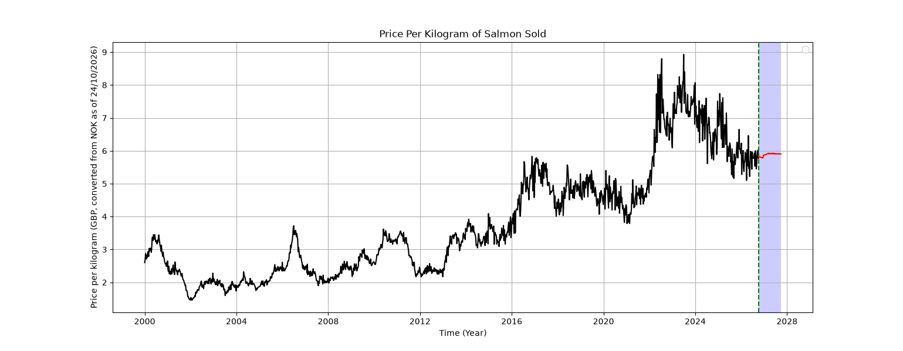

Price forecast
Explore historical salmon exports and the weekly price forecast in one graph.
Black: historical data. Red: forecast. The shaded area marks the forecast period; it is not a confidence interval.

Historical data source: Statistics Norway (SSB), table 03024.
Open interactive graph